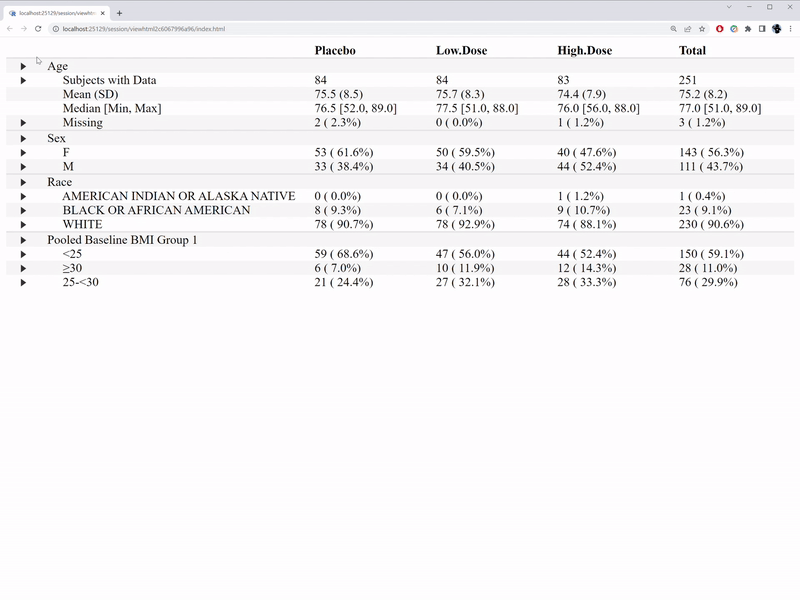

Overview
metalite-table1.RmdMotivation
A table for descriptive statistics is widely used in medical research
and typically be the first table (i.e. table1) for a
manuscript.
There are R packages and examples to create the table1:
For use case in clinical trials, Chapter 4 of the R for clinical study reports and submission contains more details.
The metalite.table1 provide an interactive table1 to
enhance the communication between statisticians and clinicians.
# Prepare analysis ready data
df <- r2rtf_adsl
df$AGE[1:3] <- NA # Create missing value for illustration purpose.
df$ARM <- factor(df$ARM,
c("Placebo", "Xanomeline Low Dose", "Xanomeline High Dose"),
c("Placebo", "Low Dose", "High Dose"))
df[1:6, c("USUBJID", "ARM", "AGE", "SEX", "RACE", "BMIBLGR1")]
#> USUBJID ARM AGE SEX RACE BMIBLGR1
#> 1 01-701-1015 Placebo NA F WHITE 25-<30
#> 2 01-701-1023 Placebo NA M WHITE >=30
#> 3 01-701-1028 High Dose NA M WHITE >=30
#> 4 01-701-1033 Low Dose 74 M WHITE 25-<30
#> 5 01-701-1034 High Dose 77 F WHITE 25-<30
#> 6 01-701-1047 Placebo 85 F WHITE >=30
# Create interactive table1
metalite_table1(~ AGE + SEX + RACE + BMIBLGR1 | ARM, # formula for analysis variables and group
data = df, # source data
id = "USUBJID") # unique subject idThe interactive features are illustrated in the GIF below.

In comparison with the table1 R package, we are able to
answer ad-hoc questions from clinicians with interactive features such
as
- Who are those subjects with missing value.
- Who are those outliers.
- What’s the distribution of a variable by treatment group.
Those are common questions for ongoing clinical trials.
# create table1
table1(~ AGE + SEX + RACE + BMIBLGR1 | ARM, data = df)| Placebo (N=86) |
Low Dose (N=84) |
High Dose (N=84) |
Overall (N=254) |
|
|---|---|---|---|---|
| Age | ||||
| Mean (SD) | 75.5 (8.50) | 75.7 (8.29) | 74.4 (7.93) | 75.2 (8.23) |
| Median [Min, Max] | 76.5 [52.0, 89.0] | 77.5 [51.0, 88.0] | 76.0 [56.0, 88.0] | 77.0 [51.0, 89.0] |
| Missing | 2 (2.3%) | 0 (0%) | 1 (1.2%) | 3 (1.2%) |
| Sex | ||||
| F | 53 (61.6%) | 50 (59.5%) | 40 (47.6%) | 143 (56.3%) |
| M | 33 (38.4%) | 34 (40.5%) | 44 (52.4%) | 111 (43.7%) |
| Race | ||||
| BLACK OR AFRICAN AMERICAN | 8 (9.3%) | 6 (7.1%) | 9 (10.7%) | 23 (9.1%) |
| WHITE | 78 (90.7%) | 78 (92.9%) | 74 (88.1%) | 230 (90.6%) |
| AMERICAN INDIAN OR ALASKA NATIVE | 0 (0%) | 0 (0%) | 1 (1.2%) | 1 (0.4%) |
| Pooled Baseline BMI Group 1 | ||||
| <25 | 59 (68.6%) | 47 (56.0%) | 44 (52.4%) | 150 (59.1%) |
| >=30 | 6 (7.0%) | 10 (11.9%) | 12 (14.3%) | 28 (11.0%) |
| 25-<30 | 21 (24.4%) | 27 (32.1%) | 28 (33.3%) | 76 (29.9%) |